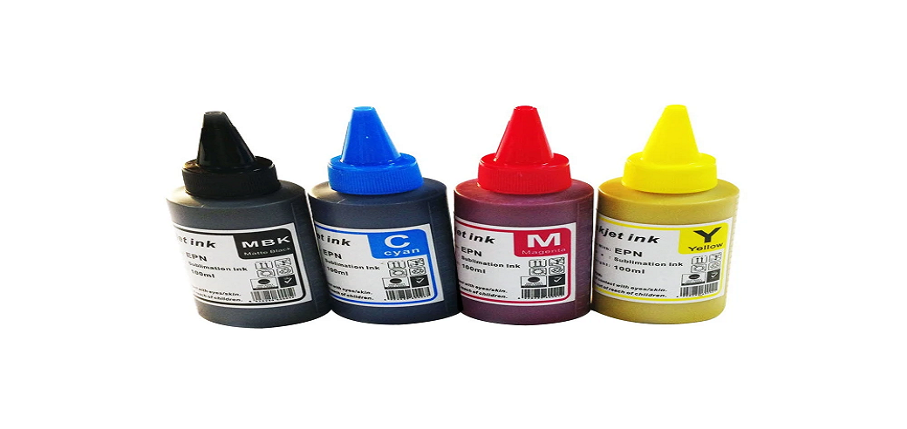

Tintas
Las tintas que se utilizan para sublimar son tintas especiales que se activan mediante el calor. Cuando decimos que se activan nos referimos a que pasan del estado solido al estado gaseoso. Durante este proceso las tintas penetran en la superficie del producto sublimable

Tazas
Son fáciles de lavar, aptas para microondas, no se borran y no se rayan ya que el sublimado penetra en el mismo polímero.

Papel Sublimable
El papel utilizado en la técnica de sublimación es específico para que transmita la tinta al sustrato a personalizar mediante la transmisión de calor.